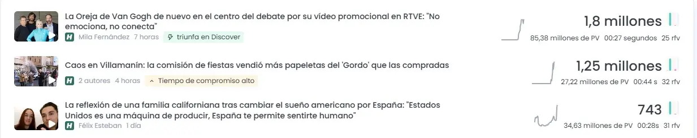
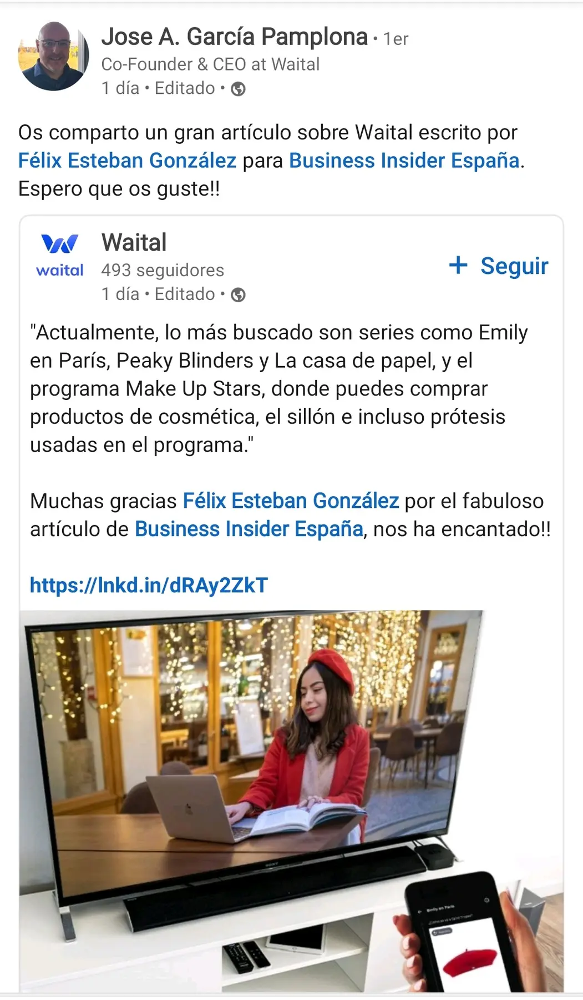

El HuffPost España
Redactor de Actualidad
Noticias, virales, sociedad, economía, tecnología, cultura y contenidos optimizados para Google Discover.
Periodismo · SEO · Google Discover · Cine
Periodista y redactor de actualidad. Convierto temas complejos en historias claras, útiles y competitivas en buscadores y plataformas de recomendación.
Perfil
Escribo para que una historia se entienda, se encuentre y merezca el clic.
Licenciado en Periodismo por la Universidad de Valladolid y máster en Comunicación Corporativa por ESERP. He trabajado como redactor, editor y coordinador en medios generalistas y especializados.
Mi experiencia combina actualidad, economía, tecnología, consumo, defensa, cultura y entretenimiento. Trabajo con enfoque SEO y Discover, sin perder la jerarquía informativa, la verificación ni el ritmo de lectura.
CV y trayectoria
El HuffPost España
Noticias, virales, sociedad, economía, tecnología, cultura y contenidos optimizados para Google Discover.
Business Insider España
Economía, tecnología, empleo, consumo, entrevistas y cobertura en directo. Cinco páginas de archivo en la ficha pública de autor.
Grupo Merca2
Producción y supervisión de contenidos digitales en un entorno de publicación intensiva.
Infodefensa y colaboraciones
Experiencia en medios y proyectos como Wall Street International, La Voz del Basket y EspecialistaMike.
Resultados
Capturas de analítica y publicaciones aportadas como documentación profesional. Las cifras se presentan con el contexto visible en cada prueba.
El artículo fue señalado como contenido destacado en Discover. Otras piezas documentadas superaron los dos millones y el millón de visualizaciones.
Leer el artículo
El HuffPost
24 pruebas documentales con datos de audiencia, posiciones destacadas y publicaciones en portada.

Business Insider
23 pruebas de rendimiento, rankings editoriales y reconocimiento de empresas y fuentes.
Reconocimiento externo
“Nos alegra compartir esta entrevista de Félix Esteban González a Antoine Jomier, cofundador y CEO de INCEPTO.”INCEPTO ES · LinkedIn
“Muchas gracias Félix Esteban González por el fabuloso artículo de Business Insider España.”Waital · LinkedIn
Selección de trabajos
Crítica de cine
Críticas, festivales, estrenos y géneros, con especial interés por la ciencia ficción, el thriller y el cine fantástico.
Perfil en EspecialistaMike Ver todas las críticasBlogs, redes y contacto
Acceso directo a mis perfiles, mi blog personal, mis críticas y mis archivos de autor. También estoy disponible para proyectos editoriales, redacción SEO y colaboraciones periodísticas.